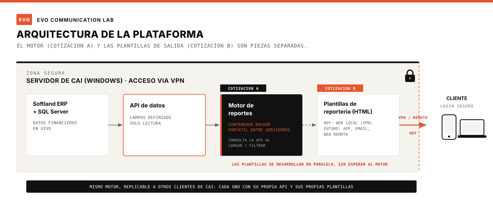

v1a
info@evo.cl
CAI Informática administra el ERP de más de 50 empresas en Chile y hoy entrega sus reportes en planillas dinámicas. Esta propuesta cubre el desarrollo del motor de la plataforma: la pieza técnica que conecta con los datos y procesa cada reporte, pensada para ser replicable en los distintos clientes de CAI.
EVO Communication Lab desarrolla este proyecto en conjunto con un desarrollador de software profesional, sumado específicamente para la parte de arquitectura e infraestructura. La reportería que corre sobre esta plataforma (las plantillas, el diseño y la administración de reportes) se presenta como una propuesta separada.
- Todo localLa plataforma corre en el servidor de CAI, en el mismo punto de acceso donde los clientes hoy revisan sus reportes: la red de CAI, vía VPN. Sin hosting externo ni datos publicados en internet abierto.
- Sin acceso directo a las bases de producciónLos reportes nunca consultan la base real. Consultan una API propia, con un contrato claro de qué campos y qué información puede entregar cada consulta.
- Acceso protegido por clienteUsuario y contraseña propios por cliente, con conexión cifrada.
El sistema tiene dos piezas separadas, que se desarrollan por caminos distintos. El motor de reportes corre dentro de un contenedor autocontenido (Docker) instalado en el servidor de CAI: consulta la API de datos cada vez que alguien carga la página o aplica un filtro, y procesa esa consulta al momento. Todo lo que el motor necesita para funcionar viaja junto en el contenedor, así que trasladarlo a otro servidor, o a otro cliente de CAI, es rápido y no depende de reinstalar piezas sueltas cada vez. Es la pieza clave para que este proyecto sea replicable, no solo un desarrollo a medida para un cliente.
Los datos no se consultan directo desde la base de producción. Se define una API propia, un contrato claro de qué campos y qué información entrega cada consulta. El motor la consulta en el momento, siempre con la información más actualizada disponible, nunca un archivo estático ni una copia vieja. Esta capa es la que decide cuánto puede ver el sistema y deja un registro claro de cada consulta, en vez de dejar la base de datos abierta a cualquier consulta.
El motor entrega los datos a las plantillas de reportería, la interfaz que ve el cliente. Hoy esa interfaz es web local, dentro de la red de CAI. A futuro, sin cambiar el motor, ese mismo dato puede salir por otros canales: web con acceso remoto, una app, envío por correo. El motor y las plantillas son piezas independientes: las plantillas se diseñan, desarrollan y cotizan aparte, en una propuesta separada.

- Ambiente de pruebaAcceso a un servidor (real o de prueba) donde instalar y probar el contenedor.
- Definición conjunta de la API de datosQué campos y qué consultas expone, sobre el modelo real de datos, con apoyo de Fernando.
- Acceso remotoVPN o escritorio remoto, para desarrollo y despliegue.
Antes de iniciar el desarrollo, CAI provee lo siguiente:
- Ambiente y accesosServidor de prueba, acceso remoto (VPN o escritorio remoto), y apoyo técnico de Fernando para el mapeo de datos.
- Datos del cliente pilotoExtracto del cliente ya identificado, en el mismo formato que hoy se entrega.
- Marca del cliente pilotoColores y logo, para personalizar su portal.
- Cuota 1 · al aprobar$750.000
- Cuota 2 · fin de mes 1$750.000
- Cuota 3 · fin de mes 2$750.000
La reportería que corre sobre esta plataforma (plantillas, diseño y administración de reportes) se presenta como una propuesta separada.
| Razón social | EVO SpA |
| RUT | 77.939.226-0 |
| Documento | Factura electrónica afecta a IVA |
| Banco | Mercado Pago · Cuenta Vista |
| N° de cuenta | 1025071550 |
| info@evo.cl |
Portales para otros clientes de CAI se cotizan aparte, de forma progresiva. Deberían costar menos que este primer proyecto, porque el patrón de despliegue ya queda resuelto aquí.
Agosto 2026